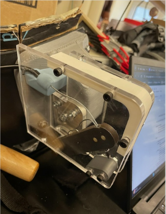
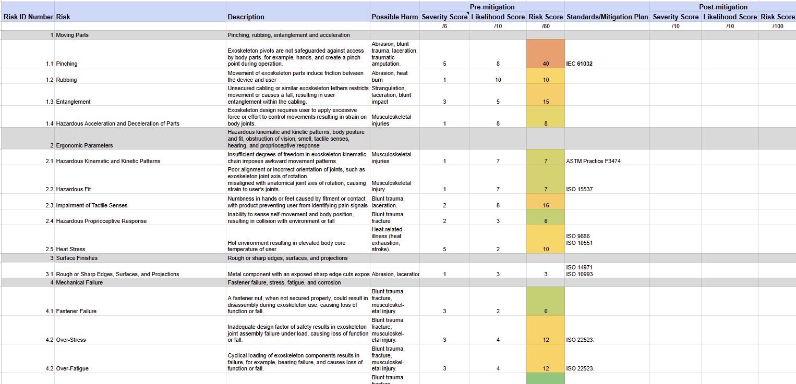
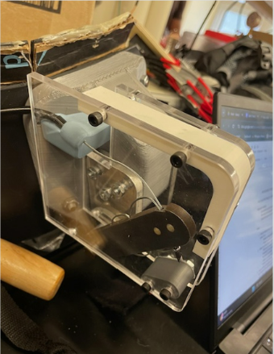
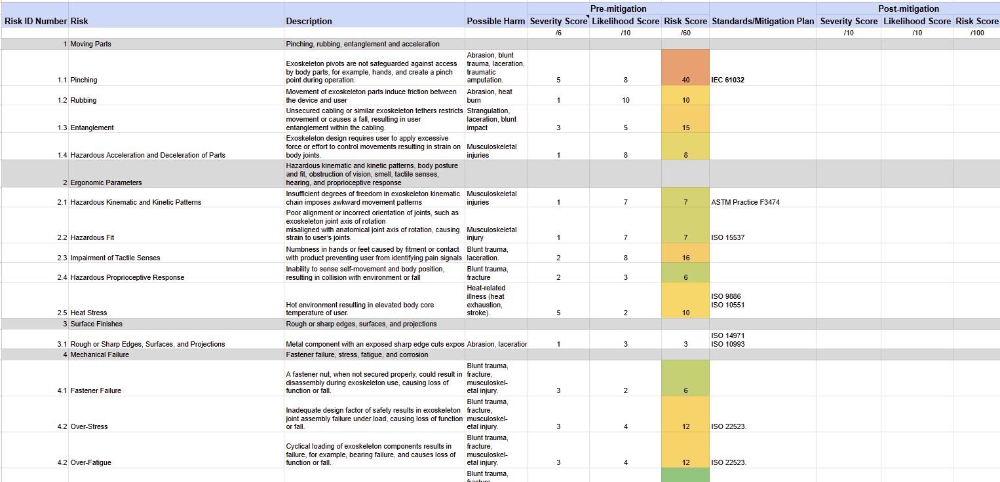

What?
Collaborated to create an exoskeleton device. Led the team through iterative risk analysis and adapted the design to comply with ISO, ASTM, and other relevant standards. I also led the design of test procedures to ensure user compatibility and ergonomics.
.png)

How?
Used SolidWorks and workshop tools (laser cutting, 3D printing, drill press) to fabricate mechanical parts. Conducted benchtop and human testing to ensure part reliability. Conducted iterative risk assessments by listing potential hazards and scoring them based on severity and likelihood. Used these results to redesign hazardous parts and meet ISO, ASTM, and other regulatory standards. Published studies and predicate medical devices were referenced to create detailed test procedures and ergonomics questionnaires.
.png) 



Results
Developed a working prototype of the exoskeleton device. While human leg actuation was limited, the design marked a significant improvement over previous iterations. Refinements in fabrication and safety testing laid the groundwork for future upgrades and demonstrated proof of concept.